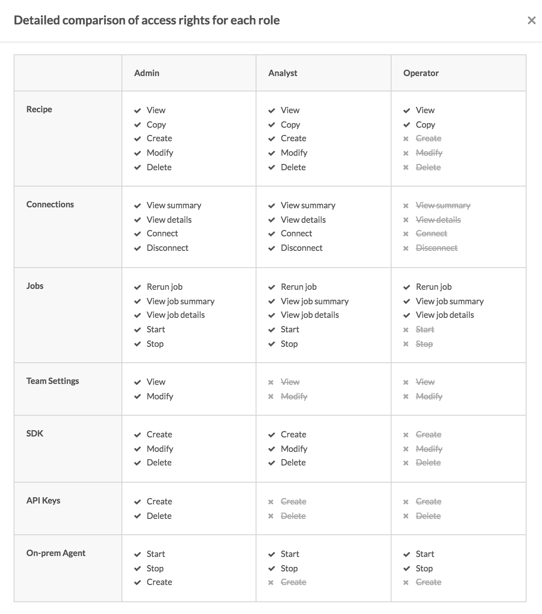

Team collaboration
Team feature enables multiple users to work on the same Workato account and collaborate on recipes in a shared workspace. User roles and permission sets can be assigned to ensure that different users have access to the features they need.
Team feature is enabled only for certain plans. Check the Pricing and Plans page or reach out to Workato sales representatives at +1 (844) 469-6752 to find out more.
Team owner permissions
For Workato accounts with team access, team owners are able to view the team option on their account menu.

Team feature menu option
In the team admin screen, team owners can view current collaborators on their team, view pending invitations to collaborators, as well as invite collaborators. Collaborator roles can also be changed by the team owner.

View collaborators, pending invites to collaborators, and invite collaborators
Team roles
The default roles for teams are:
- Admin
- Analyst
- Operator
The following table details the specific set of permissions each role has.

Access rights comparison
Admin role
Admins have almost equivalent permissions as the team owner. They are able to add, edit and delete recipes, connections, SDK, API keys and on-prem agents. In addition, admins have administrative rights over the team and are able to invite collaborators or edit collaborators' roles.
The admin role is typically given to users managing the Workato team account.
Analyst role
Analysts have no access to team administration nor API keys. They are able to add and edit recipes, connections, SDK, as well as start and stop the on-prem agents.
The analyst role is typically given to users building and testing recipes or custom connectors on Workato.
Operator role
Operators only have access to view recipes and jobs, as well as start and stop recipes and rerun jobs.
The operator role is typically given to users maintaining the recipe and ensuring the recipes are running well.
Invite collaborators
To invite collaborators, provide the full name of the collaborator and their email.

Invite collaborators to the team
Existing Workato users will be prompted to login to Workato and accept the team invite.
Non-Workato users will be prompted to sign up for a Workato account.
Switching between personal accounts and team accounts
Team members will be able to view the teams they are collaborating on in their account menu, as well as their roles in the team. Members can toggle to these teams by clicking on the team.

Switching to the ACME team account
Audit logs
Recipe changes are logged under Versions tab and attributed to the collaborator who made the change. Older versions of the recipe can be restored by users with admin or analyst roles.

Recipe audit log in Versions tab